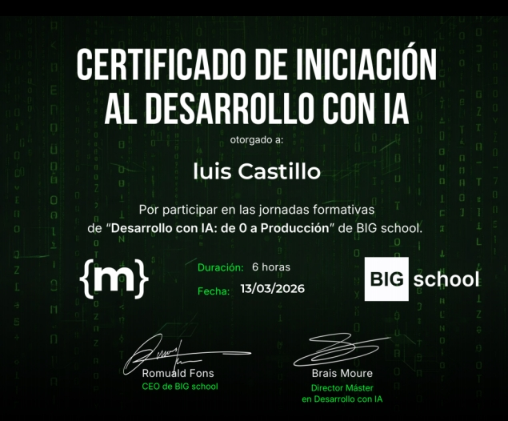
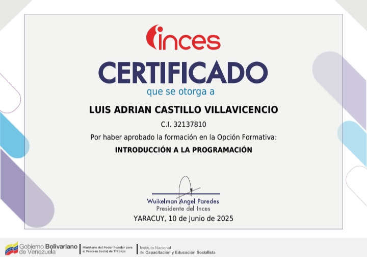
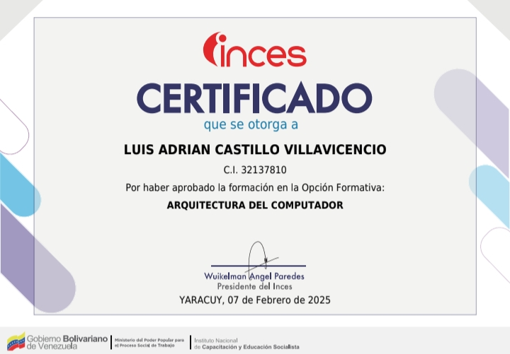
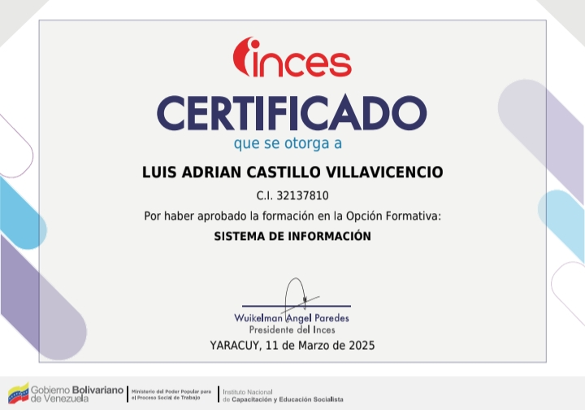
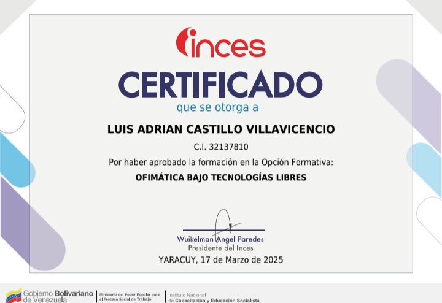
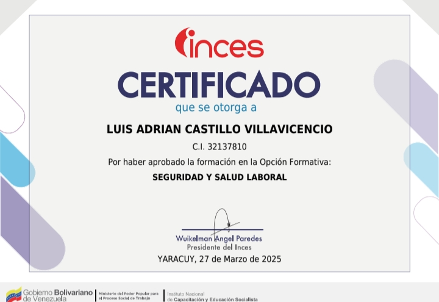

Status: Online
Luis Castillo
Técnico Medio en Informática
Profesional técnico con formación en informática y especial interés en la ciencia de datos aplicada. Capacidad analítica para el manejo de grandes volúmenes de información y automatización de procesos mediante SQL y Python. Actualmente cursando la Ingeniería para fortalecer competencias en modelado predictivo y análisis geoespacial

Habilidades Técnicas
Programación Web
- • HTML5
- • CSS3 (Flexbox/Grid)
- • JavaScript (En Apredizaje)
- • PHP (En Apredizaje)
Data Center
- • SQL (PostgreSQL/MySQL)
- • Python (Data Analysis)
- • Power BI / Excel
- • QGIS (En formación)
- • Git / Control de versiones
Diagnóstico
- • Troubleshooting Capa 1-3
- • Análisis con Netstat & Ping
- • Documentación de Topologías
Casos Prácticos
Sistema de geston y control Epidemelogico
Tienda virtual completa con catálogo de productos, carrito de compras y gestión de inventario.
Monitor Satelital de Focos de Calor
Sistema basado en Python y datos MODIS/VIIRS para la detección temprana de incendios forestales.
Landing Page para Bodas
Diseño elegante e interactivo para gestión de eventos, confirmación de asistencia y galería.
Plataforma E-commerce
Tienda virtual completa con catálogo de productos, carrito de compras y gestión de inventario.
Certificaciones

Desarrollo con IA: De 0 a Producción
Formación con Brais Moure y Romuald Fons sobre integración de modelos de IA.

Introducción a la Programación
Formación aprobada ante el INCES sobre conceptos básicos, lógica y estructuras fundamentales de programación.
Sistema Operativo
Formación aprobada ante el INCES sobre los fundamentos, administración y funcionamiento de sistemas operativos.

Arquitectura del Computador
Formación aprobada ante el INCES sobre los componentes físicos, estructura y organización de los sistemas computacionales.

Sistema de Información
Formación aprobada ante el INCES sobre el análisis, diseño y gestión de sistemas para el procesamiento de datos.

Ofimática Bajo Tecnologías Libres
Formación aprobada ante el INCES sobre el uso de herramientas de oficina en entornos de software libre.

Seguridad y Salud Laboral
Formación aprobada ante el INCES sobre normativas, prevención de riesgos y bienestar en el entorno de trabajo.
¿Conectamos?
Disponible para proyectos de infraestructura de red y consultoría técnica.
ENVIAR EMAIL